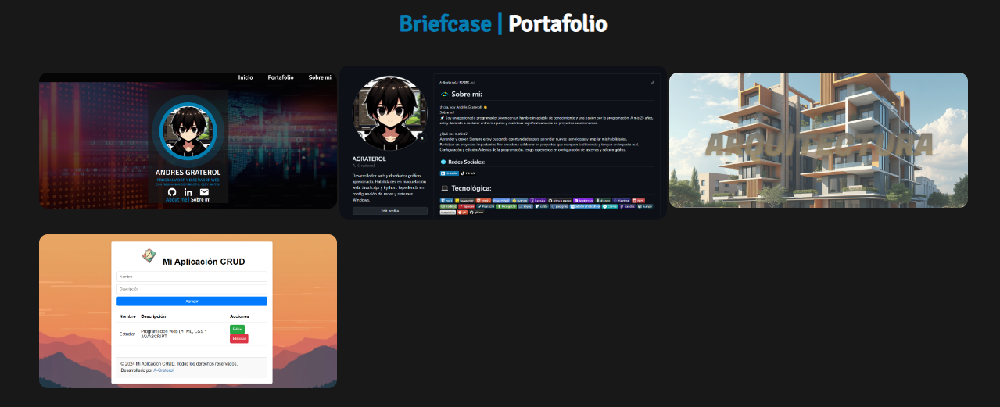
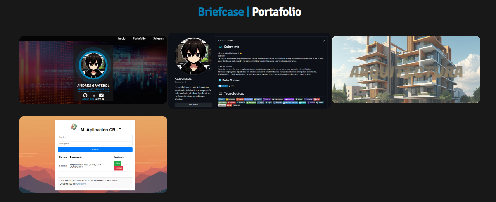

ANDRES GRATEROL
PROGRAMADOR Y DISEÑADOR WEB
CONFIGURACIÓN DE MIKROTIK, OLT Y
SWITCH


¡Hola! Soy Andrés Graterol, un apasionado desarrollador web y diseñador gráfico con una sólida base en programación y diseño. Creo que puedo aportar significativamente a cualquier equipo con mis habilidades técnicas y experiencia adicional.
Programación Web
Diseño Gráfico
Experiencia Adicional
 

Portafolio Web Personal, Construido con HTML, CSS Y JS.
Se usó librerias de npm y se optimizó
la página con webpack. Se uso estructura SEO básica para la semántica en buscadores
También puedes acceder a él desde el repositorio de github
Sobre la Pagina
Es una Pagina disenada para una empresa de arquitectura donde se puede apreciar un diseno limpio
y minimalista, que destaca con los colres y la combinacion de las imagenes que posee, al mismo
tiempo tiene efectos de menu por cada proyecto con su descripcion adecuada para los distintos
disenos creados
Se Puede apreciar que se utilizo algunas tecnologias para la creacion de la pagina web, donde se utilizo html y css, combinando con javascript para el diseno unico y minimalista
Sobre la Pagina
Es una pagina basica con funciones de prubea de un CRUD, para la creacion y anotacion de tareas
diarias, donde se pueden eliminar y editar las tareas que se vayan hacer a futuro, tiene como
objetivo seguir mejorando la interfaz para que tenga mas colores y ademas de tener mejoras para
utilizar dicha herramienta, creando futuras funciones que tengan un login o registro para
ingresar por persona a tu diario o bloc de notas virtual.